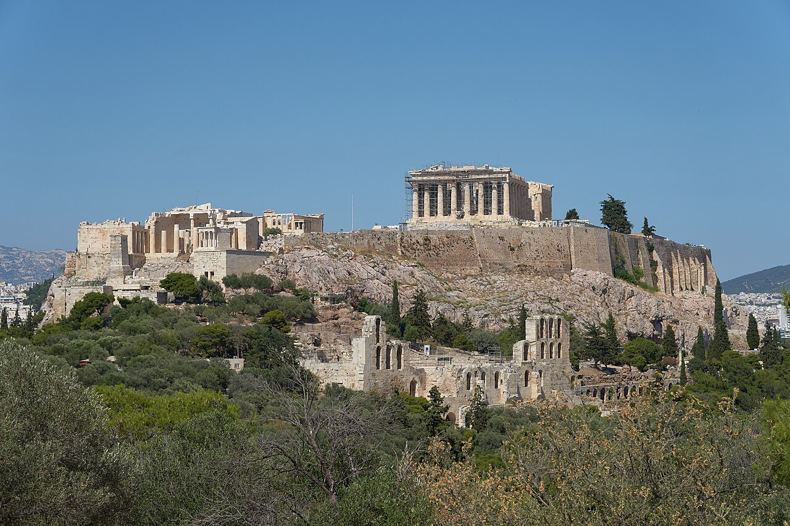
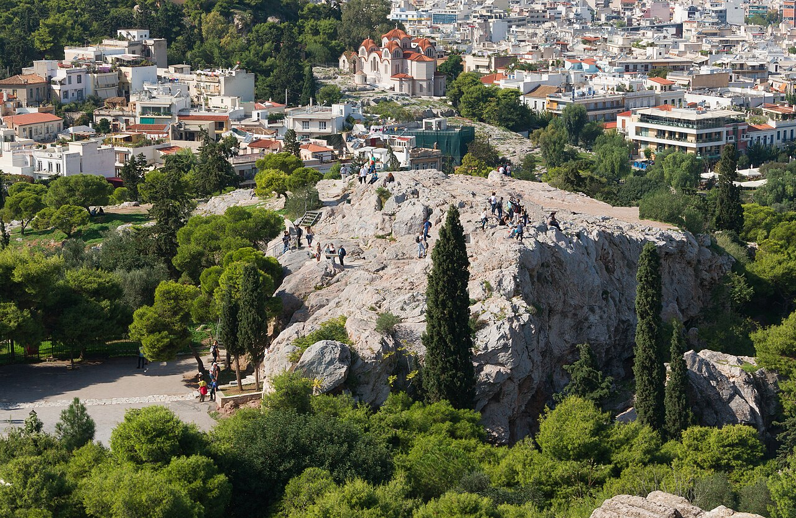
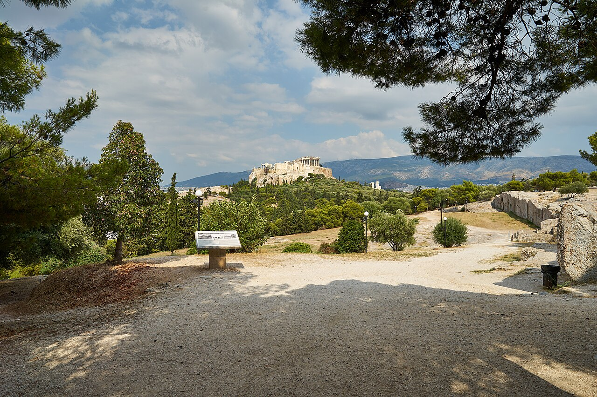
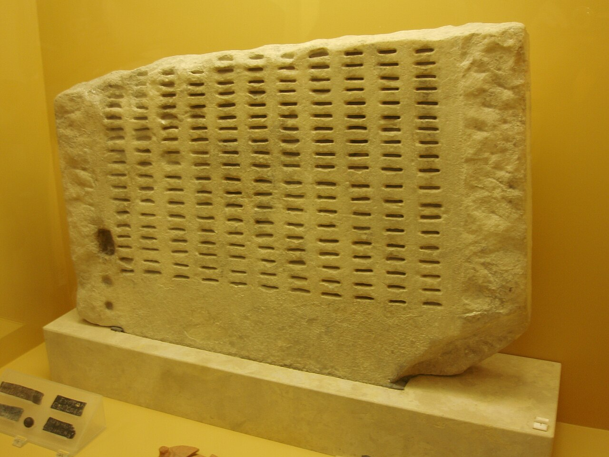
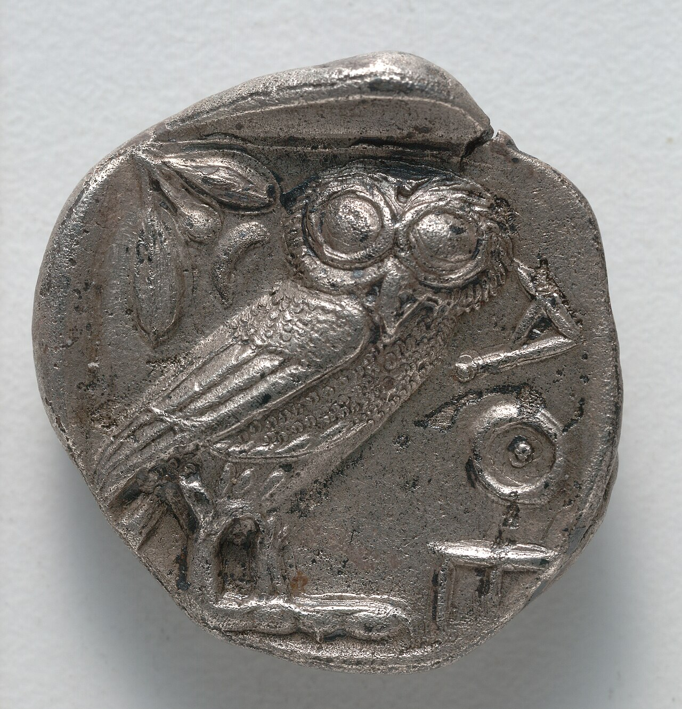
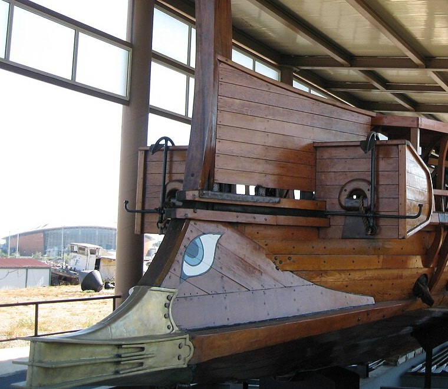
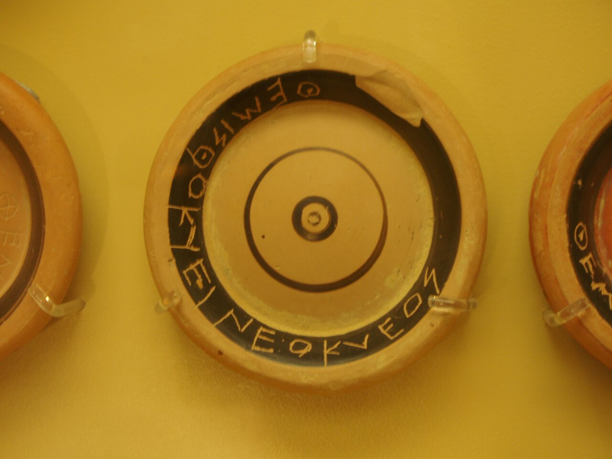
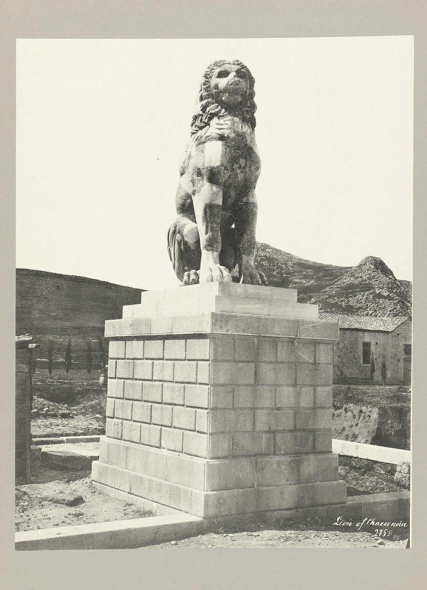

歴史・地理 History & Geography民主主義は、 なぜ アテネで 生まれた？ 2,500年前のアテネでは、国のことを市民が集まって直接決め、役人の多くを選挙ではなく「くじ」で選んでいました。そのしくみを生んだのは、貴族と民衆の争い、銀山の富、そして軍船をこいだ貧しい市民たちです。くじと話し合いのしくみ図とギリシャの地図を手がかりに、その理由と限界をたどってみませんか。
2026.11.09 UP 約8分で読める 文：SOMOSOMO編集部
写真：アテネのアクロポリス The Acropolis of Athens from Philopappos Hill／George E. Koronaios（2020年、CC0）
Previously
前回は、ブッダ・孔子・ソクラテスの話でした。3人は同じ年を生きた同時代人ではなく、100年ほどのうちに続けて現れた人々でした。豊かになった町と国どうしの争いが「どう生きるか」を問う人を生んだという見方があり、3人とも自分の本は残さず、教えは弟子たちが書き残しました。
アテネ、前508年。町の真ん中にそびえるアクロポリスの丘に、貴族のイサゴラスと仲間たちが立てこもっていました。スパルタ王の後ろ盾を得て、市民の評議会を解散させようとした人たちです。丘を取り囲んだのは、怒ったアテネの人々でした。3日目、イサゴラスたちは町を去ります。
代わって呼び戻されたのが、イサゴラスに追われていた貴族のクレイステネスです。彼はすぐに、国のことの決め方をつくり変えました。のちに「民衆（デーモス）の力（クラトス）」、デモクラティアと呼ばれるしくみの土台です。民主主義を表すデモクラシーという言葉は、ここから来ています。
当時のギリシャには、ポリスと呼ばれる小さな都市国家がたくさんありました。民主的なしくみをとった町はほかにもありましたが、記録がいちばんよく残っているのはアテネです。王でも貴族でもなく、市民が自分たちで国を動かすしくみは、なぜアテネで生まれたのでしょうか。
In a word
貴族と民衆の争い が改革を生み、軍船をこぐ市民 がそれを押し広げたから。
01
Nobles and Tyrants
貴族と 貧しい人の 争いが、 独裁者を 生んだ
民主主義の前、アテネを治めていたのは、アルコンと呼ばれる役人と、アルコンを務め終えた人たちの会議でした。会議はアクロポリスの北西の岩山で開かれたので、その名をとってアレオパゴス会議と呼ばれます。どちらも、ほとんどが名門の貴族でした。

貴族の会議の岩山 アクロポリスの上から見下ろした、アレオパゴスの丘です。貴族たちの会議は、この岩山で開かれたことから名前がつきました。いまは岩の上を、観光客が行き来しています。写真：Areopagus hill Saint Paul from Acropolis Athens ／Jebulon（2015年、CC0）
貴族と貧しい人々の差は広がり、借金を返せずに奴隷にされる人もいました。前594年、アルコンに選ばれたソロンは、借金を帳消しにし、自分の体をかたにしてお金を借りることを禁じます。市民を財産で4つの等級に分け、家柄でなく財産で役につけるようにしました。
それでも争いはおさまりません。前561年ごろ、ペイシストラトスが力ずくで権力を握ります。こうした独裁者を、ギリシャでは僭主（せんしゅ）と呼びました。彼は貧しい農民を助けました。アテネの南東のラウレイオンにある銀山の本格的な採掘も、彼の時代に始まったとされます。
息子のヒッピアスの代に締めつけが強まると、前510年、スパルタの兵の助けで追い出されます。スパルタは、ギリシャ南部のペロポネソス半島の、陸の戦いに強いポリスです。僭主が去ると貴族どうしが争い、イサゴラスがスパルタ王を呼んで、クレイステネスと数百人の市民を追い出します。その結末が冒頭の立てこもりです。
02
Lot and Assembly
市民を 住む場所で 分け直し、 くじで 役を選んだ
クレイステネスが手をつけたのは、市民の分け方でした。それまでの市民は、血のつながりにもとづく4つの部族に分かれ、それが名門の家の力の土台になっていました。彼はこれをやめ、住んでいる村や町の区（デーモス。デモクラシーの「デーモス」と同じ言葉です）ごとに市民を登録させ、新しく10の部族に組み直します。
1つの部族には、町、海沿い、内陸という離れた3つの地域の区が混ぜて入れられました。地元の名門が、顔見知りを束ねて国を動かすことは難しくなります。区の数は139だったと考えられていますが、はっきりしません。こうして、次の図のようなしくみの土台ができました。
Fig.01 アテネの 民主主義の しくみ
市民
20歳以上の男
自分で出る
くじ
くじ
民会
だれでも発言
挙手の多数決
最後に決める
評議会
500人・任期1年
10部族×50人
30歳以上
法廷の陪審
裁判1件に
数百人
30歳以上
議案を用意する
選挙
将軍10人など
専門の役
くじで選ぶ
出席・選挙など
見どころは、赤い矢印。評議会も陪審も、選挙ではなくくじで決めていました。前5〜前4世紀のしくみを簡単にした図で、時代によって細かな違いがあります。
国のことを最後に決めるのは、民会です。20歳以上の男の市民ならだれでも出席でき、だれでも発言できました。賛成と反対の演説を聞いたあと、手を挙げて多数決で決めます。戦争をするかどうかも、ここで決まりました。クレイステネスの改革のころからは、アクロポリスの西にあるプニュクスの丘が会場になります。

民会の丘 プニュクスの丘の上の、平らな広場です。木々の向こう、奥の丘の上にアクロポリスの神殿が見えます。数千人の市民が集まる民会は、この丘で開かれました。写真：The Pnyx plateau on July 6, 2020 ／George E. Koronaios（2020年、CC0）
民会に出す議案を用意したのは、500人の評議会です。10の部族から50人ずつ、30歳以上の希望者の中からくじで選ばれ、任期は1年。同じ人がなれるのは一生で2回までで、続けてはなれませんでした。
裁判も市民の仕事でした。30歳以上の市民で6,000人の名簿を作り、裁判ごとに数百人の陪審を割り当てます。裁判官も弁護士もいません。訴えた人と訴えられた人が自分で話し、陪審がその日のうちに投票で決めました。
役人も、大部分はくじで選ばれました。選挙で選んだのは、将軍のように専門の知識がいる役や、大きなお金を扱う役だけです。くじなら、お金で票を買うことも、人気取りの演説も効きません。だれにでも同じ確率で番が回ってくることが、アテネの人々にとっての平等でした。

くじ引きの石 クレロテリオンと呼ばれる、くじ引きの道具の石の板です。並んだ穴に市民の名札を差し、筒から落とした小さな駒（色は白と黒だったと考えられています）で、どの列の人を選ぶかを決めました。こうした道具は、前370年ごろから使われたとされます。写真：Athen Stoa Wahlmaschine ／Xocolatl（2008年、パブリックドメイン）
クレイステネスは、陶片追放というしくみも作ったと伝えられます。年に1度まで、市民が国の害になりそうな人の名を陶器のかけらに書いて出します。有力な説では、票が全部で6,000以上なら、いちばん多く名を書かれた人が10年間、町を追われました。罪を裁くのではなく、新しい僭主を前もって防ぐしくみです。
03
Silver and Ships
軍船を こいだ 貧しい市民が、 発言力を 得た
民主主義を試したのは、第5話のペルシア帝国との戦いでした。アテネに近いマラトンでペルシア軍に勝って7年後の前483年ごろ、ラウレイオンの銀山で大きな鉱脈が見つかりました。政治家のテミストクレスは、この銀で軍船を200隻つくろうと民会で説きます。銀を市民に分ける案もありましたが、船が選ばれました。
Fig.02 銀山も 海峡も、 アテネの すぐそばにあった
エーゲ海
マケドニア
ペルシア帝国
ペロポネソス半島
アテネ
サラミス
カイロネイア
テーベ
ラウレイオン（銀山）
スパルタ
アテネ
戦いの場所
そのほかの町
見どころは、アテネのすぐそばにラウレイオンの銀山とサラミスの海峡があること。北のマケドニアと、海の向こうのペルシアも、アテネの行方を左右しました。地図は Natural Earth（パブリックドメイン）から作りました。
つくられたのは三段櫂船（さんだんかいせん）です。こぎ手が上下3段に並んでこぐ細長い軍船で、へさきの金具を敵の船の横腹にぶつけて沈めます。速く走らせるには、大勢のこぎ手が息を合わせてこがなければなりません。


銀が、船になった 左は、前5世紀のアテネの銀貨で、女神アテナの鳥フクロウが刻まれています。右は、1987年に古代の三段櫂船を再現した船オリンピアスのへさきで、先に敵の船を突く金具がつき、横に目が描かれています。写真：左 Tetradrachm: Owl (reverse) ／クリーブランド美術館（前5世紀、CC0）、右 Triere Olympias at Paleon Faliron Museum ／Filos96（2008年、パブリックドメイン）
前480年、ペルシア王クセルクセスの大軍が攻めてくると、アテネの人々は町を空け、新しい船団でサラミスの海峡に向かいました。そしてペルシアの船団を破ります。戦いの流れを変えたのは、陸の兵ではなく船でした。
それまで国を守る中心は、自分で武具をそろえられる人たちが務める重装歩兵でした。ところが船をこいだのは、武具を買えない、いちばん下の等級の市民たちです。民主主義を批判した当時の匿名の小冊子も、民衆が船の乗り手の大半を占め、そこから力を得ていると書いています。
ただし、民会は英雄にも厳しいものでした。サラミスで船団を率いたテミストクレスも、人々の反感を買い、前472年か前471年に陶片追放にあいます。のちに彼は、かつての敵のペルシア王に仕えました。
船をこぐ市民の声が強まるなかで、前462年には、政治家のエフィアルテスの改革で貴族のアレオパゴス会議が力を失いました。続いて指導者となったペリクレスは、陪審に日当を払うしくみを始めたとされます。日当が出れば、働いて暮らす市民も陪審を務めやすくなります。

名前を刻んだ陶片 陶器の底の黒い帯に、ギリシャ文字で「ネオクレスの子テミストクレス」と刻まれています。陶片追放のときに、市民が出した票の1枚です。写真：Athen Stoa Ostrakismos ／Xocolatl（2008年、パブリックドメイン）
04
Limits and the End
参加できたのは 一部の人、 そして 戦争に 敗れた
ここまで「市民」と書いてきましたが、民会に出られたのは、成人した男の市民だけです。女性、奴隷、ほかの町から来て暮らす外国人は入りません。前451年にはペリクレスの提案で、両親ともアテネ市民の子でなければ市民になれなくなりました。
Fig.03 投票できたのは、 住む人の ごく一部
住む人の全体 約25万〜30万
市民の家族 約10万
投票できた市民 約3万
見どころは、赤い棒の短さ。投票できたのは、住む人全体の約1割でした。上の2本の差には、奴隷とほかの町から来た住民が入ります。前4世紀のアテネとその周り（アッティカ地方）の推計で、研究者によって幅があります。出典：Athenian democracy（Wikipedia 英語版）。
子どもを除いた大人だけで数えても、市民の男は多くて3割ほどだったとみられます。奴隷は、ほかの町から来た住民より多かったようです。奴隷がいたから貧しい市民も政治に時間を割けた、という見方もありますが、民主主義が奴隷に支えられていたとまでは言い切れません。
前431年、アテネは、スパルタとその仲間の国々との戦争に入ります。ペロポネソス戦争です。2年後にペリクレスが亡くなり、シチリア島への遠征で船団の大半を失うと、スパルタはペルシアの資金で船団をつくって反撃しました。前404年、アテネは降伏し、スパルタ寄りの30人の独裁者が町を治めます。
翌年の前403年には、民主主義が戻りました。けれども前399年、哲学者ソクラテスに死刑を言い渡したのも、くじで選ばれた市民の陪審でした。陪審はおそらく501人で、あと30票が逆なら無罪だったと、弟子のプラトンは書いています。
最後の幕は、北から下りました。前338年、マケドニアの王フィリッポス2世の軍が、ギリシャ中部のカイロネイアで、アテネと、その北の有力なポリスのテーベの連合軍を破ります。マケドニアは、ギリシャの北にあった王国です。このあと、ギリシャの行方を決めるのはマケドニアになりました。

カイロネイアの獅子 カイロネイアに立つ、高さ3.8メートルほどの石の獅子です。戦死したテーベの兵の墓の上に、テーベの人々が建てたと古代の旅行記に書かれています。割れて見つかった像を、台座の上に組み直したものです。写真：Lion of Chaeroneia ／アムステルダム国立美術館所蔵（撮影年不明、CC0）
アテネの民主主義は、市民が自分で集まって決める直接民主制でした。いまの多くの国は、選挙で代表を選び、その代表が議会で決める間接民主制をとっています。それでも、くじで選んだ市民が陪審員になったり、市民会議で話し合ったりするやり方は、いまも各地で使われています。
振り返ると、アテネにはいくつもの条件が重なっていました。貴族の争いと僭主への反発が改革を生み、数千人が1つの丘に集まって決められる町の大きさがあり、銀山の富が船団を生み、その船をこいだ貧しい市民が声を強めた。どれか1つでは、民主主義はこれほど育たなかったのかもしれません。
05
By the Numbers
くじと 船が 支えた国
1,100 毎年、役についたアテネの市民のおおよその人数評議会の500人を含む。選挙で選ばれたのは約100人で、残りはくじ
170 三段櫂船1隻をこぐ、こぎ手の人数乗り組みはおよそ200人。1987年、復元船を170人のこぎ手が動かした
1,500 ふつうのポリスの、大人の男の市民の人数（およそ）多くは1,000〜1,500人。アテネは3万〜6万人と飛び抜けて大きかった
Here's the Fun Part
ここが面白い！人を集めた 赤い綱は、 やがて 人を止める綱に なった
民会は、市民が喜んで押しかける場所だったわけではありません。前5世紀には、国が持つ奴隷たちが赤く染めた綱 を張り、広場（アゴラ）にいる市民をプニュクスの丘へ追い立てました。服に赤い色がついた人は、罰金を取られたといいます。
民主主義が戻った前403年のあと、民会に出た市民に日当が払われるようになりました。すると人々は進んで集まるようになります。日当をもらえるのは、先に着いた6,000人だけ。赤い綱は、今度は遅れてきた人を締め出すために 使われました。
どうすれば市民が政治に加わるのか。2,400年前のアテネの人々も同じ問いに悩み、罰と日当の両方を試していました。
次に選挙の投票率のニュースを見たら、プニュクスの丘に張られた赤い綱を思い出してみてください。
To be continued
カイロネイアの戦いで、マケドニア軍の左の翼を率いていたのは、フィリッポス2世の息子で18歳のアレクサンドロスでした。2年後に王となった彼は、10年ほどでペルシア帝国を倒し、インダス川（いまのパキスタン）のほとり、インドの入り口まで兵を進めます。彼はなぜ、10年でインドまで進めたのでしょうか。
出典・参考
Athenian democracy （Wikipedia 英語版）：デモクラティアの語の成り立ち、アテネ以外にも民主的な町があったこと、アテネの記録が最も多いこと、前594年のソロンの改革（4つの財産の等級、借金の帳消し）、前561年のペイシストラトスと前510年のヒッピアスの追放、前508〜前507年のクレイステネスの改革、前462年のエフィアルテスの改革、前404年の30人の独裁者と民主主義の復活、前338年まで民主的な形が続いたこと、民会（20歳以上の男の市民、挙手の多数決、戦争の決定）、評議会（くじ、10部族×50人、30歳以上、一生に2回まで）、陪審（30歳以上、6,000人の名簿、裁判官も弁護士もいない、1日で終わる）、陪審の日当（前462年ごろ、ペリクレス）、役人は毎年約1,100人で選挙は約100人（数字の欄）、くじの意味、前4世紀の人口の推計（アッティカに25万〜30万人、市民の家族10万人、成人男性の市民3万人、前5世紀半ばは6万人ほど）、ほかのポリスは成人男性の市民1,000〜1,500人（数字の欄）、成人男性の市民は大人の人口の多くても30%、奴隷は在留外国人より多かったらしいこと、奴隷と民主主義の関係はわからないこと、民衆が船の乗り手の大半を占めたという「老寡頭派」の小冊子、赤い綱と罰金、前403年の復活のあとの民会の日当と先着6,000人Cleisthenes （Wikipedia 英語版）：前510年のヒッピアスの追放、イサゴラスがスパルタ王クレオメネスを呼んでクレイステネスと数百人を追い出したこと、評議会の解散を図ったこと、アクロポリスでの2日の包囲と3日目の退去、クレイステネスの呼び戻し、血縁の4部族から住む区による10部族へ、町・海沿い・内陸の3地域、区の数は139とされるが議論があることAreopagus （Wikipedia 英語版）：アクロポリスの北西の岩山で開かれ、その名をとった会議であること、元アルコンからなることSolon ・Pisistratus （Wikipedia 英語版）：いちばん下の等級（テーテス）が軍船のこぎ手などを務めたこと、ペイシストラトスが貧しい農民を助けたことLavrio （Wikipedia 英語版）：ラウレイオンの銀山がアテネの大きな財源で、銀はおもに貨幣に使われたこと、ペイシストラトスのころに本格的な採掘が始まったこと、前483年ごろの鉱脈の発見とテミストクレスの200隻の提案Tetradrachm （Wikipedia 英語版）：ラウレイオンの銀でアテネのフクロウの銀貨が作られたことPnyx （Wikipedia 英語版）：アクロポリスの西1km足らず、クレイステネスの改革のころ（前507年）から民会の場所になったこと、6,000人ほどが入れたという推計Kleroterion （Wikipedia 英語版）：名札を差す穴の並んだ石の板と、筒から落とす駒（白と黒と考えられている）で列を選ぶしくみ、前370年ごろから使われたことOstracism （Wikipedia 英語版）：10年の追放、年に1度まで、6,000票の定足数（プルタルコスの説が有力とされる）、陶片を票に使ったこと、クレイステネスが始めたとされること、予防のしくみであったことThemistocles （Wikipedia 英語版）：前483年の鉱脈の発見と200隻の三段櫂船の提案、アリステイデスの分配案、前472年か前471年の陶片追放、のちにペルシア王アルタクセルクセスに仕えたことBattle of Salamis （Wikipedia 英語版）：前480年、町を空けたアテネと、新しくつくられた船団。Hoplite （同）：重装歩兵は武具を自分でそろえたことOlympias (trireme) （Wikipedia 英語版）：1985〜1987年の建造、1987年の試験で170人のこぎ手、古代の三段櫂船の乗り組みは200人でこぎ手170人（数字の欄）Pericles （Wikipedia 英語版）：前495年ごろ〜前429年、船団がほぼ下の層の人々で動かされていたこと、前451年の市民権の法Peloponnesian War （Wikipedia 英語版）：前431〜前404年、シチリア遠征（前415〜前413年）で船団の大半を失ったこと、ペルシアの資金によるスパルタの船団、前404年の降伏と30人の独裁者Trial of Socrates （Wikipedia 英語版）：くじで選ばれた陪審、おそらく501人、プラトン『ソクラテスの弁明』の「30票が逆なら無罪」Battle of Chaeronea (338 BC) （Wikipedia 英語版）：前338年、フィリッポス2世がアテネとテーベの連合軍を破ったこと、18歳のアレクサンドロスが左翼を率いたこと。Sacred Band of Thebes （同）：カイロネイアの獅子（テーベの戦死者の墓の上に建てたとパウサニアスが記す、高さ約3.8m、1902年に組み直し）Sortition （Wikipedia 英語版）：いまも陪審員や市民会議の選出にくじが使われていること地図（Fig.02）：Natural Earth （パブリックドメイン）の海岸線から作成。町の位置はおおよそ
写真：CC0 またはパブリックドメイン。クレジットはそれぞれの写真の下に記しています